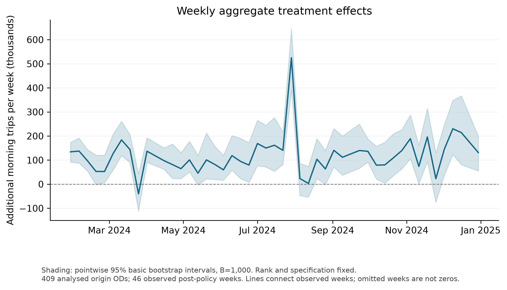

① 서울 내부 대중교통: OD 409쌍 gsynth① Within-Seoul transit: gsynth on 409 OD pairs
기후동행카드는 서울 내부 통행에만 쓸 수 있으므로 서울 내부 출발·도착 OD 409쌍을 처치 단위로, 카드 사용 범위 밖 OD 941개를 도너로 두고 일반화 합성통제법으로 반사실을 추정했습니다.The card is valid only for trips within Seoul, so 409 within-Seoul OD pairs are treated and 941 out-of-scope ODs serve as donors in a generalised synthetic control.
설계Design
- 결과변수: 주별 이용자 수(원값), 공휴일 제외. 공변량 log(출발동 인구). OD·주 고정효과.Outcome: weekly users (levels), holidays excluded; covariate log(origin population); OD and week fixed effects.
- 사전 53주, 사후 46주(2024-01-29 ~ 2024-12-30). 요인 수 r = 4 (GMSPE 1-SE 규칙).53 pre weeks, 46 post weeks (2024-01-29 to 2024-12-30); r = 4 factors (GMSPE 1-SE rule).
- 추론: OD 부트스트랩 1,000회, 정규근사 95% 구간.Inference: 1,000 OD bootstrap draws, normal-approximation 95% intervals.
- 효과율 = 100 × Σ(관측 − 반사실) / Σ반사실.Effect % = 100 × Σ(observed − counterfactual) / Σ counterfactual.
결과Results
| 기간Window | 주Weeks | 반사실 대비vs CF | 95% CI |
|---|---|---|---|
| 전체Full 2024-01-29 – 12-30 | 46 | +1.568% | 0.823 – 2.313 |
| 첫 12주First 12 weeks | 12 | +1.399% | 0.768 – 2.030 |
| 첫 24주First 24 weeks | 24 | +1.336% | 0.602 – 2.070 |
| 8월까지Through August | 30 | +1.444% | 0.741 – 2.148 |
| 첫 36주First 36 weeks | 36 | +1.459% | 0.745 – 2.173 |
| 12월 제외Excluding December | 42 | +1.478% | 0.759 – 2.198 |
출처Source: results/01_citywide_gsynth/R2_normal_final_20261011/windows.csv (metric = effect_pct, normal_lo/normal_hi)
같은 파일 기준 OD당 주평균 ATT는 288.4건, 409쌍 합산 주평균 효과는 117,959건, 46주 누적 약 543만 건입니다.From the same file: ATT 288.4 trips per OD-week; 117,959 extra trips per week summed over the 409 ODs; about 5.43 million over 46 weeks.


강건성Robustness
- 8월에서 패널을 잘라 재추정: +1.437% (전체 적합의 같은 30주 +1.444%와 유사).Refit on a panel truncated at August: +1.437% (vs +1.444% from the full fit over the same 30 weeks). 표table
- 요인 수 민감도:Rank sensitivity: MSPE 1-SE 규칙이 고른 r = 1에서는 +0.27%로 크게 작아집니다.with r = 1 (MSPE 1-SE rule) the effect falls to +0.27%. 표table
- 진단 그림(부록 B)은 그림 갤러리에서 볼 수 있습니다.Diagnostic plots (Appendix B) are in the gallery. 갤러리gallery
코드Code
code/01_citywide_gsynth/ — 교통카드 OD 패널 필요(반출 제한).requires the restricted OD panel.